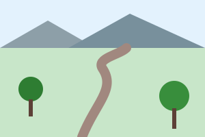

Ficha de la ruta

La ruta del Cares es una de las más espectaculares de los Picos de Europa.
Recorre la garganta excavada por el río Cares entre Poncebos y Caín. El sendero, tallado en la roca, avanza junto a precipicios, túneles y puentes. Es una ruta lineal de unos 12 kilómetros de ida, apta para casi todos los públicos.
Se recomienda llevar calzado de montaña, agua suficiente y ropa de abrigo, porque la temperatura cambia mucho a lo largo del día.
Organiza: Club Senderista Sierra Norte